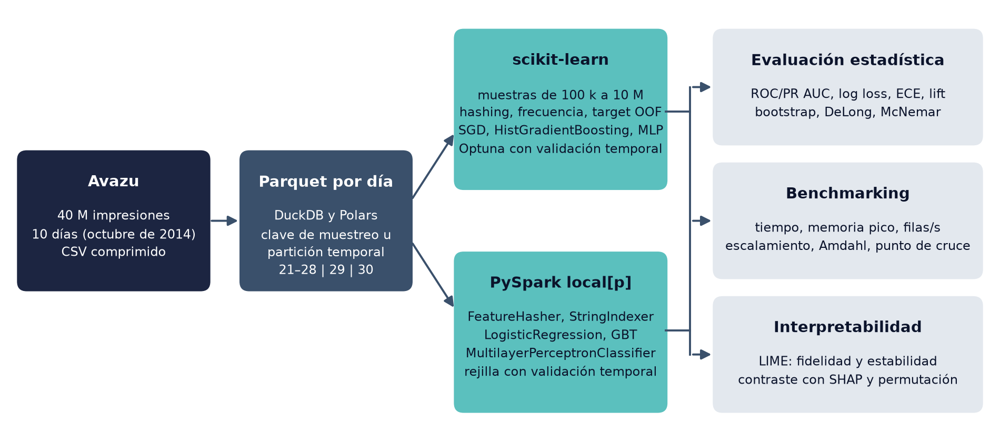

Predicción de clics en anuncios móviles con MLP#
Proyecto Integrador de Deep Learning · Universidad del Norte · Noviembre de 2026
Autores: Anyely Sanjuan Benavides y Juan David Díaz Fernández · Profesor: Dr. Lihki Rubio


Figura 1 Flujo del proyecto: de los registros de impresiones de Avazu a la comparación entre scikit-learn y PySpark.#
Descripción del proyecto#
Este libro documenta la construcción, la evaluación y la comparación de clasificadores para predecir si un usuario hará clic en un anuncio móvil (click = 1) o no (click = 0). Usamos el conjunto de datos de la competencia Avazu Click-Through Rate Prediction, con unos 40 millones de impresiones registradas durante diez días de octubre de 2014.
El modelo central es un perceptrón multicapa (MLP). Lo entrenamos en dos entornos con la misma lógica de preprocesamiento: scikit-learn, sobre muestras escalonadas en una sola máquina, y PySpark en modo local, con cómputo distribuido entre núcleos. Comparamos el MLP con dos líneas base, la regresión logística y los árboles potenciados, y medimos por separado el costo de leer, preprocesar, entrenar y predecir.
El protocolo evita la fuga de información: la partición es temporal (entrenamiento con los días 21 a 28, validación con el día 29 y prueba con el día 30), todas las transformaciones se ajustan solo con entrenamiento y el conjunto de prueba queda congelado con una huella SHA-256 antes de cualquier ajuste. Cada configuración se repite con al menos cinco semillas, y las diferencias entre modelos se evalúan con intervalos bootstrap y con las pruebas de DeLong y de McNemar.
El trabajo responde cuatro preguntas: a partir de qué volumen PySpark entrena más rápido que scikit-learn sin perder calidad (P1), cómo influye la codificación de las variables de alta cardinalidad (P2), si el MLP mejora de forma significativa a las líneas base (P3) y si las explicaciones locales de LIME son estables y fieles al modelo (P4). El capítulo 10 reúne las respuestas con su evidencia cuantitativa.
Contenido#
- 1. Definición del problema y ficha de datos
- 2. Análisis exploratorio de datos
- 3. Preprocesamiento
- 4. Modelado con scikit-learn
- 5. Modelado con PySpark
- 6. Evaluación estadística
- 7. Benchmarking computacional
- 8. Interpretabilidad local con LIME
- 9. Comparación de resultados
- 10. Reflexión crítica
- Anexo A. Reproducibilidad
- Referencias
Uso de inteligencia artificial#
Para elaborar este trabajo usamos herramientas de inteligencia artificial (Claude, de Anthropic) como apoyo en la programación, el análisis de datos y la redacción. Los autores revisamos, verificamos y aprobamos todo el contenido, y asumimos la responsabilidad por él.
Referencia#
Avazu. (2014). Click-Through Rate Prediction [Competencia y conjunto de datos]. Kaggle. https://www.kaggle.com/c/avazu-ctr-prediction